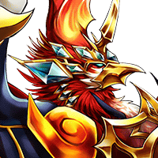

神凰
妾が人に後れを取るだと……！？
神凰
クッ……おのれ、大神皇。 滅してなお妾の力を利用する気か……？
神凰
悌神皇アルザ・マスタの力によって、 ようやく元の存在に戻ったというのに……。
セリア
どうやら封神儀を ちゃんと元に戻せたようね。
セリア
さっき、力が開放されたような 感じがしたけど、あれがそうなんでしょ？
サクノシン
良くは分かりませんが、ラカを倒したとは、 さすが、Shou-chan殿！
サクノシン
いや～、拙者やセリア師匠も、 体勢さえ崩していなければ、
サクノシン
Shou-chan殿に加勢して、 大いに活躍するところだったのですが……。
ティリス
Shou-chan～～！ ハァ……ハァ……。
セリア
どうしたの、ティリス？ 城内で待ってればよかったのに。
ティリス
うん。でも、スズネも大丈夫そうだったし、 やっぱり心配だったから。
セリア
心配してくれるのは、ありがたいんだけど、 そのへっぴり腰は、なんとかならないの？
ティリス
普通に立ってられるセリアたちの方が、 おかしいよ～！
セリア
というか、そんな格好だと 色んな所が見えちゃうわよ。
セリア
アンタ、 どうやらもう戦う力は残ってないようね。
セリア
…………Shou-chan、 そいつを連れて城内に戻るわよ。
セリア
いつまでも、 こんなところにいても仕方がないからね。
ゲンバ
儂はスズネ様に謀反を起こした上、 あまつさえ幽閉までしようとしたのだ！
セリア
前にサクノシンもそんなこと言ってたわね。 この世界の風習か何かなの！？
謎の男
罪があるというのなら、 それを断ずるのは主君の権利であり義務。
謎の男
勝手に己を断罪するなど、 それこそ身勝手極まりない！！
謎の男
スズネ姫……いえ、お館様、 この者へのご沙汰をお願いします……。
スズネ
ゲンバ…… あなたは確かに罪を犯したのかもしれません
スズネ
あなたがどうしても腹を切る…… というのなら、私は止めはしません。
スズネ
あなたが、あのラカという女剣士に 支配されたのは、
スズネ
私への忠義と天武党への対応との間で 板挟みになり、心を悩ませたため……。
スズネ
ならば、 あなたの意見に耳を貸そうともせず、
スズネ
お父様の方針を引き継いでしまった 私も同罪です。
スズネ
あなたが腹を切るというのなら、 私も命を絶たなければ、筋が通りません！
スズネ
ですが、私やあなたが命を絶ったところで、 それが真の贖罪になるとは思えません。
スズネ
真に罪の償いは、あらためて民のために、 政を行うことです。
スズネ
ゲンバ…… もし自分の罪を許せないというのなら、
スズネ
私の贖罪のために、 力を貸して頂けませんか……？
ゲンバ
そのお言葉、このゲンバ、 謹んでお受けいたします……！！
ゲンバ
民のため……スズネ様のために、 一層働かせて頂きます……！！
スズネ
ええ、ゲンバ、 これからも頼りにしてますよ……。
スズネ
すべては、幼い頃にあなたから受けた お教えによるものです、ミョウケイ様。
スズネ
ミョウケイ様は、私の幼い頃、 教育係を務められていた方です。
スズネ
数年前、在籍していた寺から姿を消されたと お聞きし、心配していたのですが……。
ミョウケイ
ハッハッハッ…… 諸国を見て回っておりました。
セリア
そうだ。もう１人、スズネに扱いを任せたい 奴がいるんだけど……。
セリア
この世界の人間だから、 あなたが処遇を決めたほうがいいと思って。
セリア
アンタみたいなタイプは、なんとしてでも 生き延びようとするかと思ったんだけど。
ラカ
神凰が倒されちゃ、 神妙になるしかないさ……。
ラカ
あたしの力は、ほぼ全て向こうに 持っていかれちまった……。
ラカ
おそらく、あたしはもう刀すら満足に 振るうことはできないだろうさ。
ラカ
この先、そんな状態で生きていくなんて、 面白くないだろ……？
ティリス
……その人の言ってることは、 おそらく本当だよ。
ティリス
以前と比べて身体に宿る力が 大きく減っているのを感じるから……。
スズネ
どこへなりとも、 好きな場所にお行きなさい。
ラカ
フン……解放されたからって、 あたしが改心するとでも思ってるのかい？
ラカ
分かっていて、 あたしを解放するというのかい……。
ラカ
今はこんな身体だけど、いつか必ず、 元の強さを取り戻してみせてやるよ……。
ラカ
フフフ…… その時になって、後悔しないことだね……。
サクノシン
姫様の決定に 異を唱えるつもりはありませんが、
スズネ
ですが、死を望んでいた彼女を、 我々が罰したところで、
スズネ
それは本当の意味での 罰にならないでしょう。
スズネ
戦うこと、殺戮することが 生きがいだった彼女にとって、
スズネ
それができない身体で生きることこそが、 真の罰となる……
ティリス
「いつか強さを取り戻す」 とも言ってたけど……。
スズネ
あの者が強さを取り戻すというのなら、 その時はその時です。
スズネ
あの者などに揺るがされない国を、 私たちが作っておけばいいだけの話です。
セリア
そこまで考えているのなら、 私たちが口出す必要はないみたいね。
スズネ
Shou-chan様、ティリス様、 セリア様……
スズネ
私はなんとお礼を申し上げていいか、 感謝の言葉も見つかりません……。
スズネ
察するに、今後もこの凰刃那原同様に ほかの世界へも調査に向かわれるのでは？
セリア
ええ、今も仲間たちが 調査を続けているからね。
スズネ
では、Shou-chan様たちの 目的が成就するよう
スズネ
時間ができた時、ぜひまた この世界に遊びに来てください。
スズネ
私たちは、いつでもあなた方を 心より歓迎いたします！
ティリス
この世界のこと、そしてスズネたちのことを もっとよく知りたいからね！